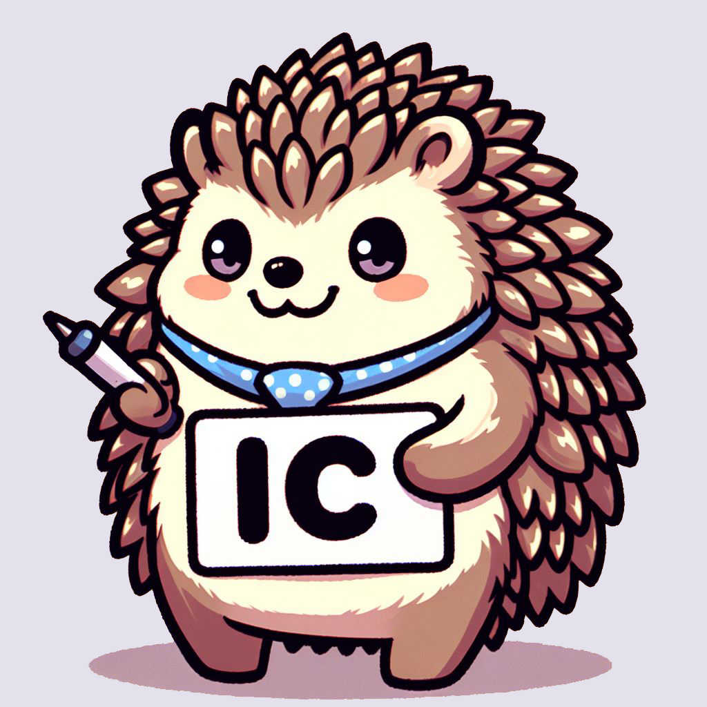

Neste projeto de iniciação científica da Fatec de Votorantim, explora-se como a tecnologia pode promover práticas sustentáveis e socialmente responsáveis, integrando os Objetivos de Desenvolvimento Sustentável (ODS) e critérios Ambientais, Sociais e de Governança (ESG) no desenvolvimento de sistemas multiplataforma.
"Em cada linha de código, tecemos o futuro sustentável. Nosso trabalho é a ponte entre a tecnologia e a responsabilidade ambiental, construindo um mundo melhor para as gerações futuras."
Veja Mais
